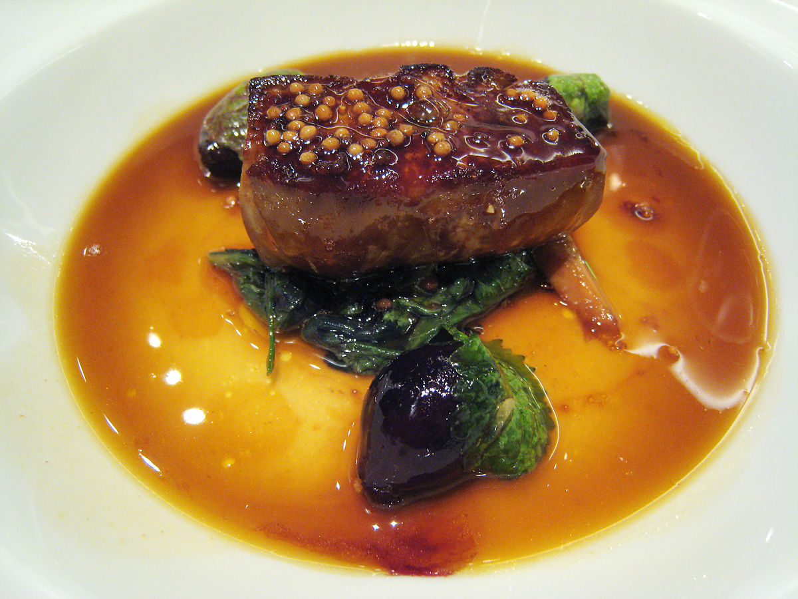

Foie gras

Description
Foie gras is a specialty food product made of the liver of a duck or goose. According to French law, foie gras is defined as the liver of a duck or goose fatt ened by gavage. In Spain and other countries, it is occasionally produced using natural feeding.
Ingredients
- 1 whole duck foie gras, about 1 1/2 pounds, slightly chilled
- Coarsed salt
- Black pepper, freshly ground
- 6 slices white bread, cut in round
- 1 tablespoon extra virgin olive oil
- 4 fresh black mission figs, halved
- 2 shallots, finely chopped
- 6 tarragon leaves, chopped
- 1/2 cup port wine
- 1 orange,juiced, divided
- 2 tablespoons balsamic vinegar
- 1 pat butter
Steps
- Carefully pull apart the 2 lobes of the foie gras with your hands and remove the veins that are lodged between them. Using a sharp knife dipped in boiling water, cut each lobe into 1-inch medallions, approximately 6 (4-ounce) slices. Score the top of each medallion in a diamond pattern and season with salt and pepper. Sear the medallions in a hot, dry pan for 30 seconds per side, seasoned side down first. Remove to a warmed platter lined with paper towels to drain.
- Lower heat to medium and pour out a bit of the rendered duck fat. Fry the bread rounds until brown, about 2 minutes each side, set aside. Wipe out the pan and coat with olive oil. Brown the figs, cut side down, then add the shallots and tarragon. Cook for 2 minutes. Deglaze the pan with port, juice of 1/2 orange and balsamic vinegar, cook down, about 3 minutes. Finish off the sauce with butter, a pinch of sugar, orange zest, salt and pepper.
- Combine the endive, arugula and chives together in a small bowl. Toss with remaining orange juice, lemon juice and olive oil, season with salt and pepper. Arrange a handful of salad on each plate and lay the toast on top. Carefully place a foie gras medallion on each toast round. Top with figs, drizzle with port wine sauce. Garnish with chives and serve at once.